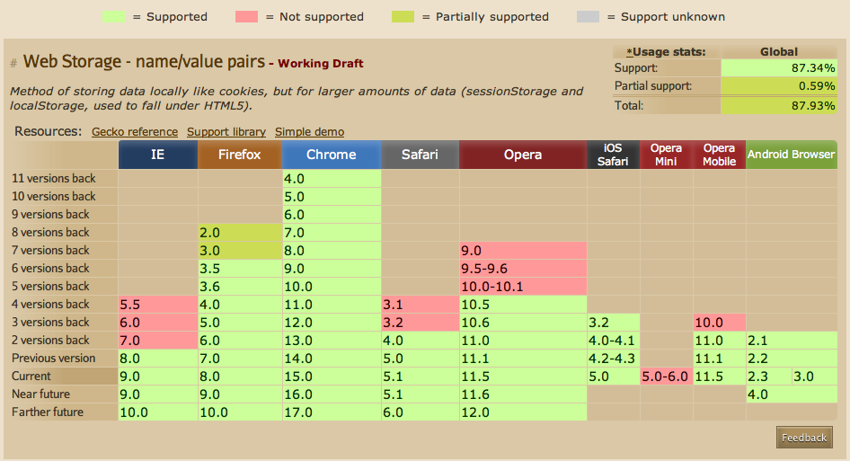
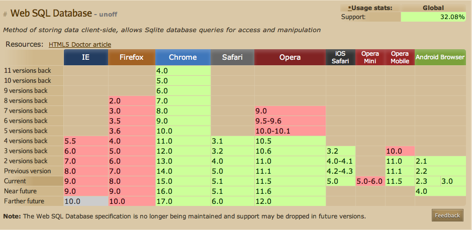
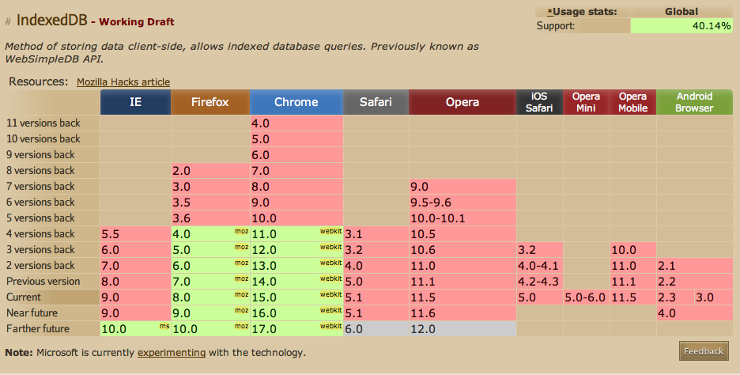

Базы данных: введение, часть десятая
Илья Тетерин
2011-11-23
(use arrow keys or PgUp/PgDown to move slides)
Илья Тетерин
2011-11-23
(use arrow keys or PgUp/PgDown to move slides)
Базы у вас под рукой ...

Предыдущая версия HTML4.0 была сформирована в 1997-ом году.
Два способа хранения - база данных на сервере или набор COOKIE(короткий текст) на стороне клиента.
Изменение "состояния" - послать запрос на сервер, изменить состояние на сервере, получить ответ, изменить cookie.
Пример: обычная, традиционная "корзина" на веб-сайте ...
Что произойдет, если пользователь откроет две сессии одновременно?
Зачем? Дабы сравнить вариант вылета в субботу и в воскресенье.
Что сломается? И почему?
Спецификация Web Storage - находится в разработке.
Вводятся два новых способа хранения информации у клиента:
interface Storage {
readonly attribute unsigned long length;
DOMString? key(unsigned long index);
getter DOMString getItem(DOMString key);
setter creator void setItem(DOMString key, DOMString value);
deleter void removeItem(DOMString key);
void clear();
};
Спецификация
[NoInterfaceObject]
interface WindowSessionStorage {
readonly attribute Storage sessionStorage;
};
Window implements WindowSessionStorage;
[NoInterfaceObject]
interface WindowLocalStorage {
readonly attribute Storage localStorage;
};
Window implements WindowLocalStorage;
Как использовать
<script>
window.sessionStorage.setItem("session.1", "33");
window.localStorage.setItem("local.1", "38");
</script>
[Constructor(DOMString type, optional StorageEventInit eventInitDict)]
interface StorageEvent : Event {
readonly attribute DOMString key;
readonly attribute DOMString? oldValue;
readonly attribute DOMString? newValue;
readonly attribute DOMString url;
readonly attribute Storage? storageArea;
};
dictionary StorageEventInit : EventInit {
DOMString key;
DOMString? oldValue;
DOMString? newValue;
DOMString url;
Storage? storageArea;
};
var logged = "key:" + e.key + ", newValue:" + e.newValue
+ ", oldValue:" + e.oldValue + ", url:" + e.url
+ ", storageArea:" + e.storageArea;
localStorage - устойчивое и переживет перезапуск браузера...
... можем показать данные с того места, где браузер выключился ...
Попробуем пример: в хранилище посещаемость лекций, хочу видеть графики ...
Данные в виде ключ-значение: (data.X;N), где X - номер лекции, N - количество студентов
("data.01", "33")
("data.02", "34")
("data.03", "27")
...
getAllKeys = function() { // все ключи в массив
var st = window.localStorage;
var data = [];
for (var i = 0; i < st.length; i++)
data.push(st.key(i));
return data;
};
isData = function(key) { // нас интересуют только data. ключи
return key && key.startsWith('data.');
};
loader = function(key) { // по ключу - значение
return window.localStorage.getItem(key);
};
loadData = function () {
// взять ключи, отобрать нужные, отсортировать, взять значения
return getAllKeys().filter(isData).sort().map(loader);
// return getAllKeys().filter(isData)
// .sort().map(window.localStorage.getItem);
};
<script src="./files/jquery.js"></script>
<script src="./files/jquery.sparkline.js"></script>
drawGraphs = function (items) {
$('.dynamicsparkline').sparkline(items,
{height:200, width:200, lineWidth: 3, chartRangeMin: 0});
$('.dynamicbar').sparkline(items,
{type: 'bar', barColor: 'green', height:100, barWidth:10, chartRangeMin: 0});
var t = document.getElementById('plaindata');
t.innerHTML = '';
for (var i = 0; i < items.length; i++) {
var d = document.createElement('div');
d.innerHTML = '' + i + ': ' + items[i];
t.appendChild(d);
}
};
$(document).ready(function() {
drawGraphs(loadData());
});
<table border="1"><tr>
<td><span class="dynamicsparkline">Loading..</span></td>
<td><span class="dynamicbar">Loading..</span></td>
<td><span id="plaindata">Loading..</span></td>
</tr></table>
cd (folder with samples) python -m SimpleHTTPServer // это простой web server, который отдает файл из каталога // по http://localhost:8000/
Потом открыть страницу примера
... или пример на fluffypulser.ru ...
... но у нас же есть событие storage ...
Слушатель событий
report = function(val) {
var incomingRow = document.createElement('pre');
incomingRow.innerHTML = val;
document.getElementById("container").appendChild(incomingRow);
};
displayStorageEvent = function(e) {
var logged = "key:" + e.key + ", newValue:" + e.newValue
+ ", oldValue:" + e.oldValue + ", url:" + e.url
+ ", storageArea:" + e.storageArea;
report(logged);
this.drawGraphs(this.loadData());
};
window.addEventListener("storage", displayStorageEvent, true);
Источник событий
newLine = function() {
var k = document.getElementById("key").value;
var v = document.getElementById("val").value;
window.localStorage.setItem(k, v);
}
removeLine = function() {
var k = document.getElementById("key").value;
window.localStorage.removeItem(k);
}
key: <input type="text" name="key" id="key"/>
val: <input type="text" name="val" id="val"/>
<input type="button" value="new" onclick="newLine()"/>
<input type="button" value="remove" onclick="removeLine()"/>
<a href="st.insert.html">reload</a>
cd (folder with samples) python -m SimpleHTTPServer // это простой web server, который отдает файл из каталога // по http://localhost:8000/
Потом открыть страницу слушателя (на fluffypulser.ru) ...
Потом открыть страницу источника (на fluffypulser.ru)
И начать добавлять / удалять данные ...
Полезно: на странице "источник" открыть View / Developer / Developer Tools и там Resources / Local Storage ...
Данные "кешируются" у пользователя ...
Страница может отображать данные стартуя с кэша - еще до получения данных от сервера.
Обновления одной страницы разлетаются в несколько других страниц (Model-View-Controller).
Пользовательский интерфейс отсмотра котировок - одно окно получает поток данных с сервера, а в других окнах - таблицы, графики етс.
Код и принципы работы - аналогичны.
Хранилище живет только в одной закладке браузера.
Пользователь может работать с разными наборами пар в разных окнах (what-if сценарии).
В пределах одной закладки пользователь может уходить и возвращаться на страницу.
Пример: session storage (на fluffypulser.ru)
Как хранить JSON объект в storage?
Сериализуй в строку и храни.
var obj = ...;
window.localStorage.setItem('myObj', JSON.stringify(obj));
...
var myObj = eval(window.localStorage.getItem('myObj'));
Поддержка в каких браузерах?

if (typeof(window.localStorage) === "undefined") {
// "Your browser does not support HTML5 storage";
w3.org: Web SQL Database - набор APIs для клиент-сайд баз использую SQL...
db.readTransaction(function (t) {
t.executeSql('SELECT title, author FROM docs WHERE id=?', [id],
function (t, data) {
report(data.rows[0].title, data.rows[0].author);
}
)});
Спецификация "заброшена" с комментарием: Все реализации используют Sqlite - этого мало для реализации стандарта ...
w3.org: Indexed Database API - хранить много объектов локально - поиск по ключам, множественные значения для ключа, порядок обхода ключей ... NoSQL ...
Статьи на habrahabr.ru по тэгам IndexedDB и web sql database ...


Книга: Pro HTML5 Programming By Peter Lubbers, Brian Albers, and Frank Salim.
site /
перевод на ozon.ru / примеры кода
Habrahabr.ru: поиск по HTML5
w3.org спецификации:
Web Storage,
Web SQL Database
и Indexed Database API
Начиналось все с одного компьютера
потом разнесли на терминал - сервер
потом сервер базы - сервер бизнес-логики - терминал
потом добавился вебсервер
... а теперь база прокидывается прямо в браузер.
Использование локальной базы - открывает новые возможности - перенос части данных и логики в клиента.
Но еще предстоит понять как правильно и с пользой это использовать.
Сложности - распределенная система будет требовать синхронизации тысяч клиентов с центральным хранилищем ...
Markdown (маркдаун) - язык разметки текстовых документов. Происходит из разметки почтовых сообщений.
Пишете текст с простой разметкой, пропускаете через процессор, получаете XHTML документы.
Много реализаций - например GitHub форматирует им сообещиния и пользовательские комменты ..., stackoverflow.com - тоже.
Параграф текста. Из нескольких предложений.
А этот _текст_ будет наклонным(<em>...).
А этот **текст** будет выделенным (<strong>...).
1. нумерованный (<ol><li>...)
2. список строк
А с четырех пробелов начинается кусок код (<pre><code>...)
База данных =========== Цель работы ----------- Цель данной работы познакомить студентов с архитектурой современных баз данных, дать навыки создания и использования NoSQL хранилищ. В работу входят задания на: * создание _key-value_ хранилища * реализация шардирования и партиционирования * работа с **распределенным** состоянием * сериализация объектных данных для стримового представления Ожидаемые результаты -------------------- 1. Запускающийся код 2. Текстовое описание 3. Описание архитектуры
<!DOCTYPE html> <html><head><meta charset="utf-8"></head><body> <h1>База данных</h1> <h2>Цель работы</h2> <p>Цель данной работы познакомить студентов с архитектурой современных баз данных, дать навыки создания и использования NoSQL хранилищ. </p> <p>В работу входят задания на:</p> <ul> <li>создание <em>key-value</em> хранилища</li> <li>реализация шардирования и партиционирования</li> <li>работа с <strong>распределенным</strong> состоянием </li> <li>сериализация объектных данных для стримового представления</li> </ul> <h2>Ожидаемые результаты</h2> <ol> <li>Запускающийся код</li> <li>Текстовое описание </li> <li>Описание архитектуры</li> </ol> </body></html>
Цель данной работы познакомить студентов с архитектурой современных баз данных, дать навыки создания и использования NoSQL хранилищ.
В работу входят задания на:
...